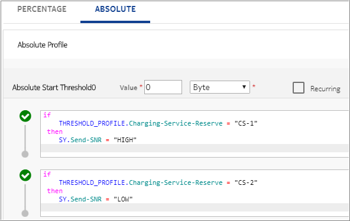
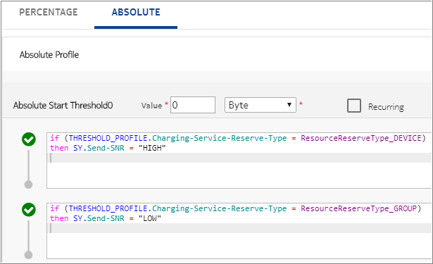
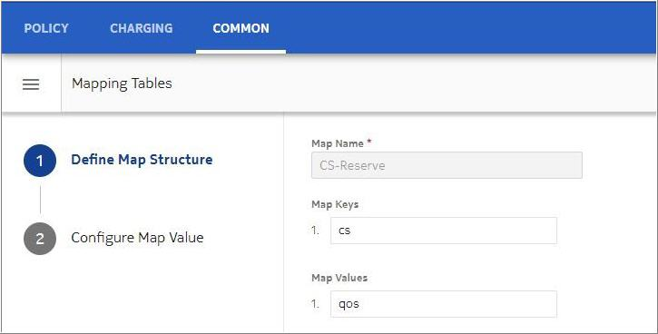
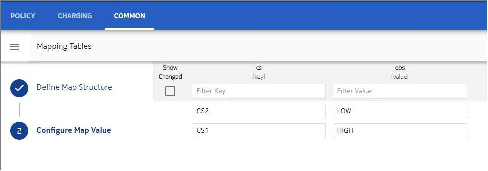
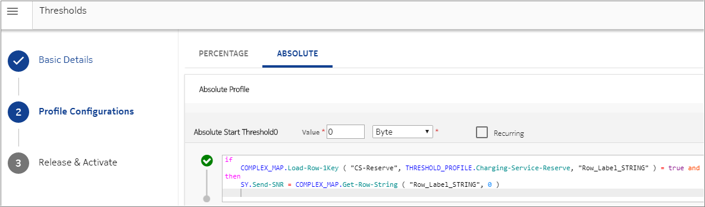
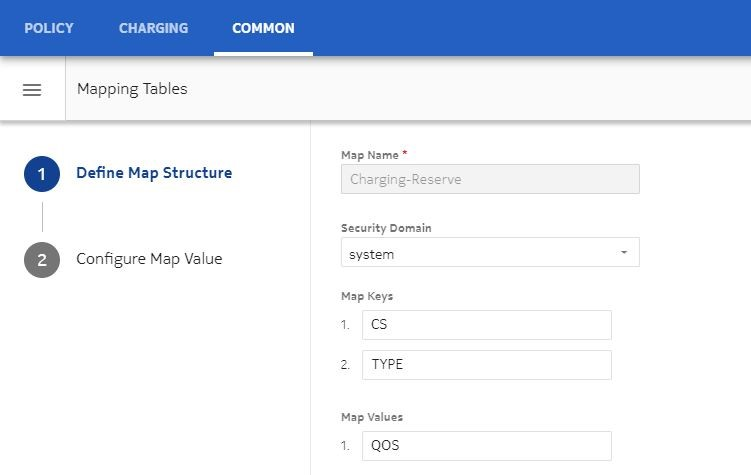
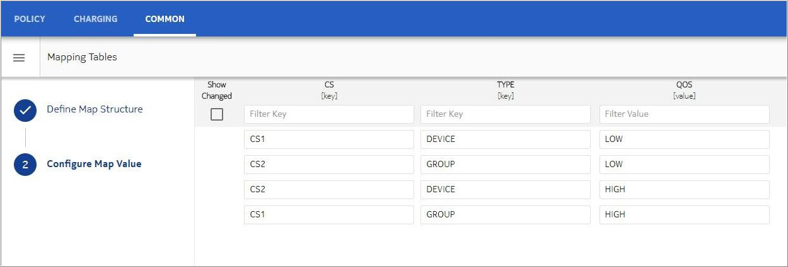
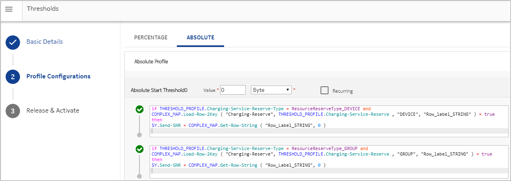

For a resource-based counter, the SNR is sent based on the resource used for maximum reservation. Threshold rule is evaluated during reservation to provide Counter Signaling State. Rule evaluation decides the Counter Signaling State based on resource with maximum reservation and/or resource type (Device/Group) to which it belongs.
Threshold is applied with configuration Absolute From Start and value 0 to process Counter Signaling State in every reservation.
|
Name of context variable |
Description |
|---|---|
| Charging-Service-Reserve | Name of the charging service from which the maximum reservation has been done. |
| Charging-Service-Reserve-Type | Name of the resource (DEVICE/GROUP) to which the charging service with maximum reservation belongs. |
| Bundle-Name-Reserve | Name of the bundle from which the maximum reservation has been done. |
| Bundle-Reserve-Type | Name of the resource (DEVICE/GROUP) to which the bundle with maximum reservation belongs. |
Following are the ways to configure the threshold rule to decide the state based on various conditions, such as Charging-Service-Reserve, Bundle-Reserve, Charging-Service-Reserve-Type, or Bundle-Reserve-Type:
Configuring threshold rule using the Charging-Service or Bundle Names or Types (DEVICE/GROUP).
The following figure shows an example of using Charging-Service-Reserve in rule. In the same way it can be used based on Bundle-Reserve:
Similarly, to decide the state based on condition of CS Type (Charge-Service-Reserve-Type), configure threshold rule as shown in the following example. In the same way, it can be used based on the Bundle-Reserve-Type:
Configuring threshold rule using complex map.
Example 1: Configuring the Charging-Service-Reserve with its corresponding state using complex map
Configure the complex map to have mapping between key (Charging-Service-Reserve) and value (state for particular charging service), to be used in threshold rule.
The following figure shows an example of a complex map using the Charging-Service-Reserve and corresponding state. In the same way, a Bundle-Reserve can also be configured.
 To evaluate the state corresponding to Charging-Service-Reserve through Complex Map, configure threshold rule using Complex Map as shown in the following figure. In the same way, the Bundle-Reserve can be configured.
Example 2: Configuring the Charging-Service-Reserve and Charging-Service-Reserve-Type with its corresponding state using complex map.
Configure the complex map to have a mapping between key (combination of Charging-Service-Reserve and Charging-Service-Reserve-Type) and value (state for particular combination), to be used in the threshold rule.
The following figure shows an example of a complex map using a combination of Charging-Service-Reserve and Charging-Service-Reserve-Type to determine its state. In the same way, the Bundle-Reserve and Bundle-Reserve-Type can be configured.
 To evaluate state corresponding to combination of Charging-Service-Reserve and Charging-Service-Reserve-Type through complex map, configure threshold rule using Complex Map as shown in the following figure. In the same way, Bundle-Reserve and Bundle-Reserve-Type can be configured.

 Note:
Note: